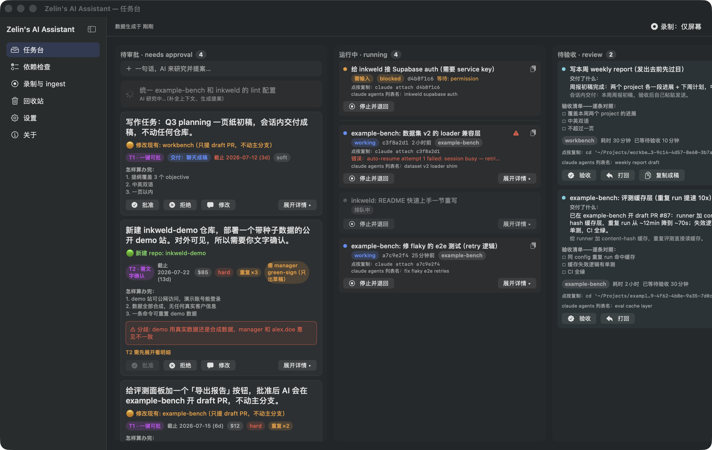

Zelin's AI Assistant
A personal AI chief-of-staff for macOS
You approve and accept — everything else is automated.
Meeting notes · Slack · Gmail → approval cards
Background Claude agents
Runs on your Mac
